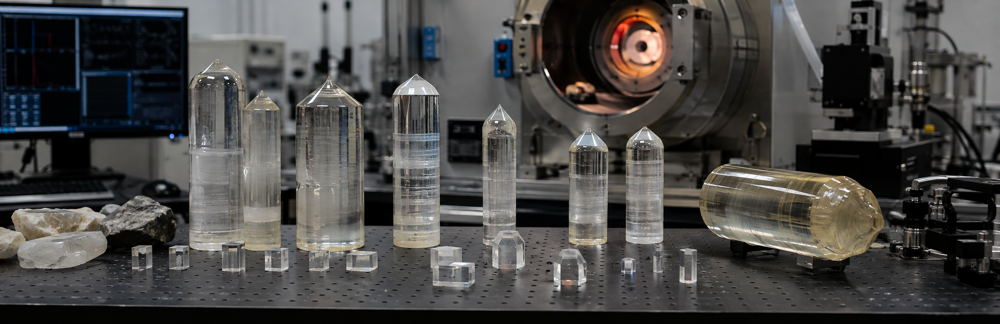
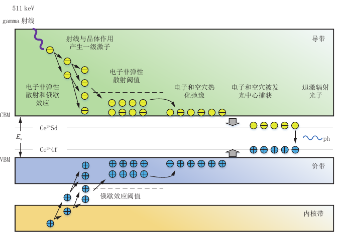
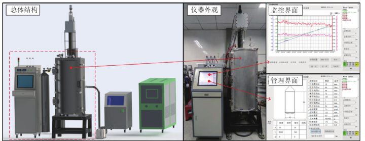
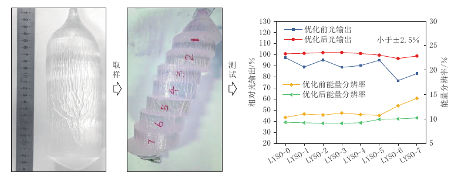
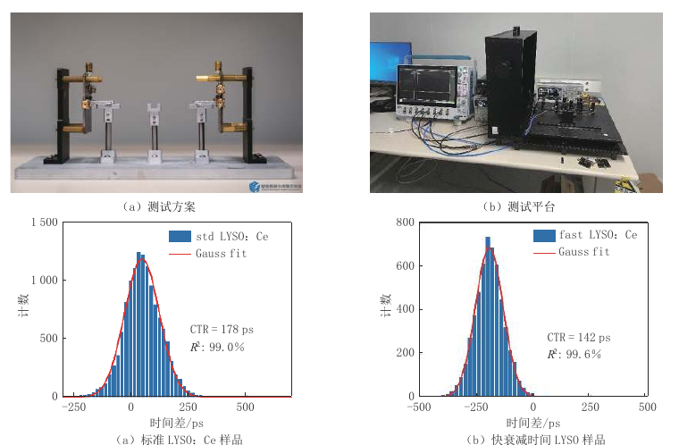

How a Gamma Ray Becomes an Image: LYSO Crystals in All-Digital PET
PET locates radiotracers by detecting pairs of 511 keV gamma rays produced when positrons annihilate. Ordinary electronics cannot sense a gamma ray directly. The ray first deposits energy in a scintillation crystal, which releases a brief burst of visible photons; a photosensor then converts that light into an electrical pulse. The crystal sits at the very beginning of the information chain, so information lost here cannot be recreated later by software.
Cerium-doped lutetium yttrium orthosilicate, or LYSO:Ce, has become a leading PET material because it balances several needs at once: stopping gamma rays in a compact detector, producing enough light for energy measurement, emitting it quickly, and remaining mechanically and chemically stable.
Why LYSO became a PET workhorse

LYSO's high density and effective atomic number give a gamma ray a good chance of interacting within a practical detector thickness. Its light output supports energy discrimination, while a short decay time helps separate neighboring events. It can also be cut into small crystal elements and operated reliably for long periods.
Yet two crystals carrying the same material label are not necessarily equivalent. Cerium concentration, oxygen vacancies, co-dopants, and thermal gradients during growth can all alter light yield and timing. If a large boule changes from head to tail, the detector pixels cut from it may respond like a collection of slightly different instruments.
Digital sampling changes the material question
Conventional readouts often shape the pulse in analog electronics before extracting energy and time. All-digital PET aims to preserve a closer representation of the original signal and reconstruct it in software, for example from multiple voltage-threshold crossings. This opens more algorithmic options, but it also exposes crystal-to-crystal differences that analog processing may once have hidden.
Value-domain sampling is sensitive not only to total light but also to the rising edge, decay profile, and event-to-event waveform consistency. Two crystals with similar light output can generate biased crossing times if their pulse models differ. A crystal designed for all-digital PET therefore needs to be bright, fast, and reproducible.
Uniformity is grown—and controlled

LYSO is commonly produced by the Czochralski method: raw material is melted in a high-temperature crucible, a seed touches the melt, and the growing boule is slowly pulled and rotated. Diameter, interface shape, and defect distribution depend on a moving balance of thermal field, pulling speed, rotation, and atmosphere. Small deviations can accumulate over a long, large-volume growth run.
The team developed growth-parameter models and combined real-time weighing, shape feedback, and interface control. Co-doping and annealing were used to tune defects and cerium states. The aim is not merely to select a few good pieces after growth, but to keep optical and scintillation properties consistent throughout the boule.

From a material number to system timing
The review reports 36,179 photons per MeV of light output and a 31.3 ns decay time for the modified material. When the crystals were integrated into an all-digital PET detector prototype, the team reported a coincidence time resolution of 142 ps. That result is not a direct conversion from one crystal specification: it emerges from the crystal, photosensor, electronics, thresholds, and reconstruction algorithm working together.

Performance records must therefore be read with care. Values obtained with different crystal sizes, optical coupling, photosensors, and fitting methods are not automatically comparable. The 142 ps measurement demonstrates the system-level promise of one materials route under specific conditions, not a guaranteed result for every scanner using LYSO.
The next step is a conversation between physics and sampling
All-digital PET is pushing materials research beyond a few average specifications toward the timing history of individual photons. Future work must describe how cerium emission, defect trapping, and optical transport build that history—and how composition and growth conditions alter it. Reliable models can then guide threshold placement and waveform reconstruction.
LYSO is not a passive pane of glass at the front of a digital system. It decides where the signal begins and how far digital processing can go. Co-designing materials, devices, and algorithms is the path to turning more detected photons into useful estimates of time, energy, and position.
This feature independently interprets and rewrites the review “Advance in Lutetium Yttrium Silicate Scintillation Crystal for All-Digital PET” by Rui Zheng, Jingbin Chen, Yulong Liu, Peng Xiao, and Qingguo Xie. The Chinese-language article appeared in CT Theory and Applications, 2024, 33(4), 405–420. DOI: 10.15953/j.ctta.2024.014.